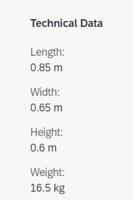
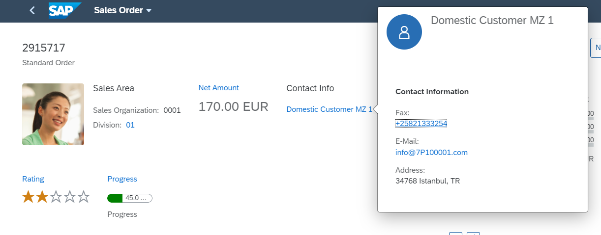

To do so, add a UI.ReferenceFacet that points to UI.FieldGroup or UI.Identification. If you provide a label in the UI.ReferenceFacet, it is used as the form's title.

<Record Type="UI.ReferenceFacet">
<PropertyValue Property="Label" String="{@i18n>@TechnicalData}"/>
<PropertyValue AnnotationPath="@UI.FieldGroup#TechnicalData" Property="Target"/>
</Record>
The header form facet supports the display of a contact with a quick view, as shown below:
The sample code below shows the UI.FieldGroup.
<Annotation Term="UI.FieldGroup" Qualifier="Test">
<Record>
<PropertyValue Property="Data">
<Collection>
<Record Type="UI.DataField">
<PropertyValue Property="Value" Path="Product" />
<Annotation Term="UI.Importance" EnumMember="UI.ImportanceType/High" />
</Record>
<Record Type="UI.DataField">
<PropertyValue Property="Value" Path="ProductCategory" />
<Annotation Term="UI.Importance" EnumMember="UI.ImportanceType/Medium" />
</Record>
<Record Type="UI.DataFieldForAnnotation">
<PropertyValue Property="Label" String="Supplier" />
<PropertyValue Property="Target" AnnotationPath="to_Supplier/@Communication.Contact" />
</Record>
<Record Type="UI.DataField">
<PropertyValue Property="Value" Path="Price" />
<Annotation Term="UI.Importance" EnumMember="UI.ImportanceType/Medium" />
</Record>
<Record Type="UI.DataFieldWithIntentBasedNavigation">
<PropertyValue Property="Label" String="Weight (with IBN)" />
<PropertyValue Property="Value" Path="Weight" />
<PropertyValue Property="SemanticObject" String="EPMProduct" />
<PropertyValue Property="Action" String="manage_st" />
</Record>
</Collection>
</PropertyValue>
<PropertyValue Property="Label" String="Product Information" />
</Record>
</Annotation>
In the sample code above, the third record is a UI.DataFieldForAnnotation, which, in this case, points to a contact annotation on a different entity that has a 1:1 relation to the root entity. The label is derived from the label in the UI.DataFieldForAnnotation and the value is the fn property of the contact annotation.
The last record is a UI.DataFieldWithIntentBasedNavigation to render the property value as a link, allowing for navigation to the semantic object.
Contacts on 1:n relations are not supported in the header.